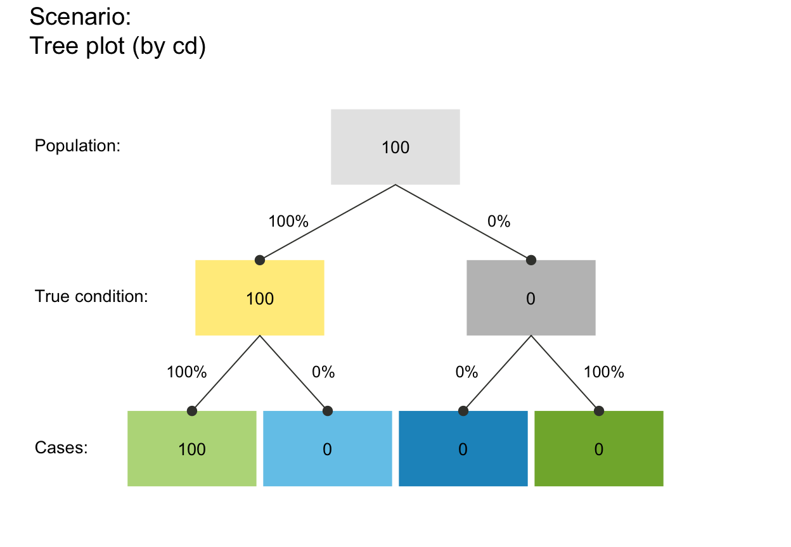
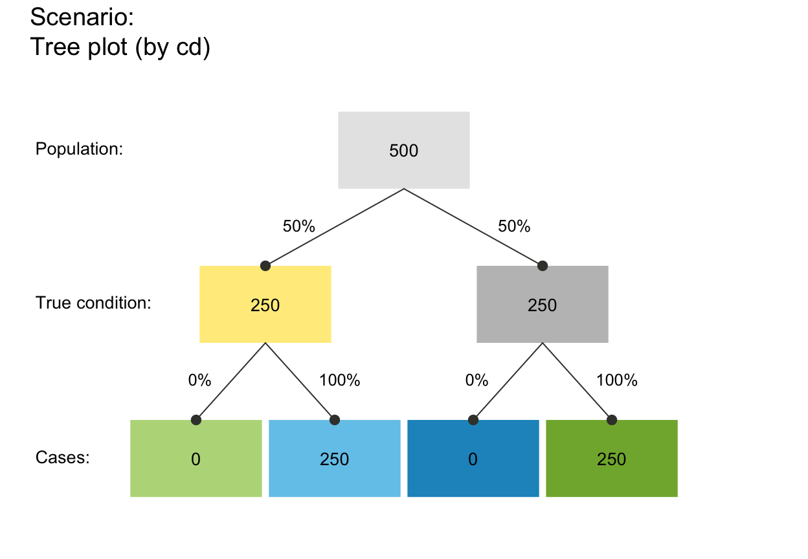

Verify that a set of probabilities describes an extreme case.
Source:R/comp_util.R
is_extreme_prob_set.Rdis_extreme_prob_set verifies that a set
of probabilities (i.e., prev,
and sens or mirt,
and spec or fart)
describe an extreme case.
is_extreme_prob_set(prev, sens = NA, mirt = NA, spec = NA, fart = NA)
Arguments
| prev | The condition's prevalence value |
|---|---|
| sens | The decision's sensitivity |
| mirt | The decision's miss rate |
| spec | The decision's specificity |
| fart | The decision's false alarm rate |
Value
A Boolean value:
TRUE if an extreme case is identified;
otherwise FALSE.
Details
If TRUE, a warning message describing the
nature of the extreme case is printed to allow
anticipating peculiar effects (e.g., that
PPV or NPV values
cannot be computed or are NaN).
This function does not verify the type, range, sufficiency,
or consistency of its arguments. See is_prob,
is_suff_prob_set, is_complement,
is_valid_prob_pair and
is_valid_prob_set for these purposes.
See also
is_valid_prob_pair verifies that a pair of probabilities can be complements;
is_valid_prob_set verifies the validity of a set of probability inputs;
num contains basic numeric variables;
init_num initializes basic numeric variables;
prob contains current probability information;
comp_prob computes current probability information;
freq contains current frequency information;
comp_freq computes current frequency information;
as_pc displays a probability as a percentage;
as_pb displays a percentage as probability
Other verification functions:
is_complement(),
is_freq(),
is_perc(),
is_prob(),
is_suff_prob_set(),
is_valid_prob_pair(),
is_valid_prob_set(),
is_valid_prob_triple()
Examples
# Identify 6 extreme cases (+ 4 variants): is_extreme_prob_set(1, 1, NA, 1, NA) # => TRUE + warning: N true positives#> Warning: Extreme case (prev = 1 & sens = 1): #> N hi (TP) cases; 0 cond_false or dec_false cases; NPV = NaN.#> [1] TRUE#>#> Warning: Extreme case (prev = 1 & sens = 1): #> N hi (TP) cases; 0 cond_false or dec_false cases; NPV = NaN.#> Warning: Extreme case (prev = 1 & sens = 1): #> N hi (TP) cases; 0 cond_false or dec_false cases; NPV = NaN.#> Warning: NPV is NaN.#> Warning: FOR is NaN.#> Warning: Some derived prob values are peculiar. Check for extreme probabilities!is_extreme_prob_set(1, 0, NA, 1, NA) # => TRUE + warning: N false negatives#> Warning: Extreme case (prev = 1 & sens = 0): #> N mi (FN) cases; 0 cond_false or dec_true cases; PPV = NaN.#> [1] TRUE#>#> Warning: Extreme case (prev = 1 & sens = 0): #> N mi (FN) cases; 0 cond_false or dec_true cases; PPV = NaN.#> Warning: Extreme case (prev = 1 & sens = 0): #> N mi (FN) cases; 0 cond_false or dec_true cases; PPV = NaN.#> Warning: PPV is NaN.#> Warning: FDR is NaN.#> Warning: Some derived prob values are peculiar. Check for extreme probabilities!sens <- .50 is_extreme_prob_set(0, sens, NA, 0, NA) # => TRUE + warning: N false positives#> Warning: Extreme case (prev = 0 & spec = 0): #> N fa (FP) cases; 0 cond_true or dec_true cases; PPV = NaN.#> [1] TRUE#>#> Warning: Extreme case (prev = 0 & spec = 0): #> N fa (FP) cases; 0 cond_true or dec_true cases; PPV = NaN.#> Warning: Extreme case (prev = 0 & spec = 0): #> N fa (FP) cases; 0 cond_true or dec_true cases; PPV = NaN.#> Warning: NPV is NaN.#> Warning: FOR is NaN.#> Warning: Some derived prob values are peculiar. Check for extreme probabilities!# Variant: is_extreme_prob_set(0, sens, NA, NA, 1) # => TRUE + warning: N false positives#> Warning: Extreme case (prev = 0 & spec = 0): #> N fa (FP) cases; 0 cond_true or dec_true cases; PPV = NaN.#> [1] TRUE#>#> Warning: Extreme case (prev = 0 & spec = 0): #> N fa (FP) cases; 0 cond_true or dec_true cases; PPV = NaN.#> Warning: Extreme case (prev = 0 & spec = 0): #> N fa (FP) cases; 0 cond_true or dec_true cases; PPV = NaN.#> Warning: NPV is NaN.#> Warning: FOR is NaN.#> Warning: Some derived prob values are peculiar. Check for extreme probabilities!sens <- .50 is_extreme_prob_set(0, sens, NA, 1) # => TRUE + warning: N true negatives#> Warning: Extreme case (prev = 0 & spec = 1): #> N cr (TN) cases; 0 cond_true or dec_false cases; NPV = NaN.#> [1] TRUE#>#> Warning: Extreme case (prev = 0 & spec = 0): #> N fa (FP) cases; 0 cond_true or dec_true cases; PPV = NaN.#> Warning: Extreme case (prev = 0 & spec = 0): #> N fa (FP) cases; 0 cond_true or dec_true cases; PPV = NaN.#> Warning: NPV is NaN.#> Warning: FOR is NaN.#> Warning: Some derived prob values are peculiar. Check for extreme probabilities!# Variant: is_extreme_prob_set(0, sens, NA, NA, 0) # => TRUE + warning: N true negatives#> Warning: Extreme case (prev = 0 & spec = 1): #> N cr (TN) cases; 0 cond_true or dec_false cases; NPV = NaN.#> [1] TRUE#>#> Warning: Extreme case (prev = 0 & spec = 1): #> N cr (TN) cases; 0 cond_true or dec_false cases; NPV = NaN.#> Warning: Extreme case (prev = 0 & spec = 1): #> N cr (TN) cases; 0 cond_true or dec_false cases; NPV = NaN.#> Warning: PPV is NaN.#> Warning: FDR is NaN.#> Warning: Some derived prob values are peculiar. Check for extreme probabilities!prev <- .50 is_extreme_prob_set(prev, 0, NA, 1, NA) # => TRUE + warning: 0 hi and 0 fa (0 dec_pos cases)#> Warning: Extreme case (sens = 0 & spec = 1): #> 0 hi (TP) and 0 fa (FP) cases; 0 dec_pos cases; PPV = NaN.#> [1] TRUE#>#> Warning: Extreme case (sens = 0 & spec = 1): #> 0 hi (TP) and 0 fa (FP) cases; 0 dec_pos cases; PPV = NaN.#> Warning: Extreme case (sens = 0 & spec = 1): #> 0 hi (TP) and 0 fa (FP) cases; 0 dec_pos cases; PPV = NaN.#> Warning: PPV is NaN.#> Warning: FDR is NaN.#> Warning: Some derived prob values are peculiar. Check for extreme probabilities!# # Variant: is_extreme_prob_set(prev, 0, 0, NA, 0) # => TRUE + warning: 0 hi and 0 fa (0 dec_pos cases)#> Warning: Extreme case (sens = 0 & spec = 1): #> 0 hi (TP) and 0 fa (FP) cases; 0 dec_pos cases; PPV = NaN.#> [1] TRUE#>#> Warning: Extreme case (sens = 0 & spec = 1): #> 0 hi (TP) and 0 fa (FP) cases; 0 dec_pos cases; PPV = NaN.#> Warning: Extreme case (sens = 0 & spec = 1): #> 0 hi (TP) and 0 fa (FP) cases; 0 dec_pos cases; PPV = NaN.#> Warning: PPV is NaN.#> Warning: FDR is NaN.#> Warning: Some derived prob values are peculiar. Check for extreme probabilities!prev <- .50 is_extreme_prob_set(prev, 1, NA, 0, NA) # => TRUE + warning: 0 mi and 0 cr (0 dec_neg cases)#> Warning: Extreme case (sens = 1 & spec = 0): #> 0 mi (FN) and 0 cr (TN) cases; 0 dec_neg cases; NPV = NaN.#> [1] TRUE#>#> Warning: Extreme case (sens = 1 & spec = 0): #> 0 mi (FN) and 0 cr (TN) cases; 0 dec_neg cases; NPV = NaN.#> Warning: Extreme case (sens = 1 & spec = 0): #> 0 mi (FN) and 0 cr (TN) cases; 0 dec_neg cases; NPV = NaN.#> Warning: NPV is NaN.#> Warning: FOR is NaN.#> Warning: Some derived prob values are peculiar. Check for extreme probabilities!# # Variant: is_extreme_prob_set(prev, 1, NA, 0, NA) # => TRUE + warning: 0 mi and 0 cr (0 dec_neg cases)#> Warning: Extreme case (sens = 1 & spec = 0): #> 0 mi (FN) and 0 cr (TN) cases; 0 dec_neg cases; NPV = NaN.#> [1] TRUE#>#> Warning: Extreme case (sens = 1 & spec = 0): #> 0 mi (FN) and 0 cr (TN) cases; 0 dec_neg cases; NPV = NaN.#> Warning: Extreme case (sens = 1 & spec = 0): #> 0 mi (FN) and 0 cr (TN) cases; 0 dec_neg cases; NPV = NaN.#> Warning: NPV is NaN.#> Warning: FOR is NaN.#> Warning: Some derived prob values are peculiar. Check for extreme probabilities!